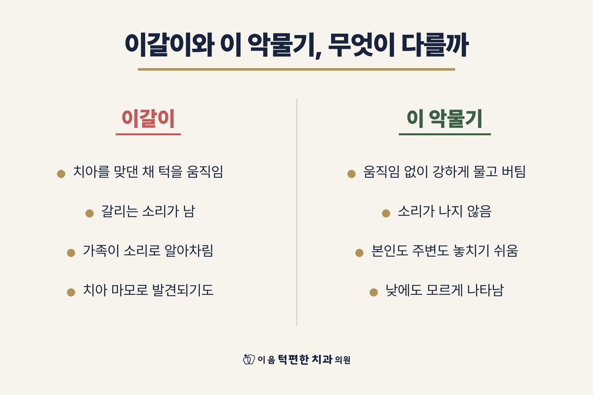

아침의 턱 통증·뻐근함은 수면 중 이갈이·이 악물기를 알려주는 단서일 수 있습니다.
다만 이것 하나만으로 단정할 수는 없습니다. 전날의 습관과 수면 자세도 영향을 줍니다.
치아의 마모와 시림, 관자놀이 두통, 가족이 들은 소리 같은 단서를 함께 살핍니다.
통증이 반복되거나 입 벌림 제한·턱 잠김·치아 손상이 함께 나타나면 진료로 확인하는 것이 좋습니다.
음식을 씹을 때 쓰는 교근(볼 근육)과 측두근(관자놀이 근육)은 아래턱을 움직이고 치아를 맞물리게 하는 근육입니다. 잠자는 동안 이를 갈거나 꽉 무는 동작이 반복되면 이 근육들이 밤새 일을 한 셈이 되어, 아침에 피로감과 누르면 아픈 압통이 남습니다.
다만 원인이 수면 중 습관에만 있는 것은 아닙니다. 질긴 음식이나 껌을 오래 씹은 날, 턱을 괴는 습관, 한쪽 턱이 눌리는 수면 자세도 영향을 줍니다.
이갈이는 잠잘 때뿐 아니라 깨어 있을 때도 나타납니다. 특히 낮의 이 악물기는 소리가 나지 않아 본인도 모르게 지나가기 쉽습니다.
지금 입술을 다문 상태에서 위아래 치아가 닿아 있나요? 편안한 턱은 입술은 닫혀 있어도 위아래 치아는 살짝 떨어져 있습니다. 치아가 붙어 있다면 이 악물기 습관이 있다는 신호입니다.
치아의 마모 상태, 씹는 근육의 압통, 입 벌림 범위와 턱관절 상태를 확인합니다.
수면 중 부담이 확인되면 밤에 끼는 교합안정장치(스플린트)로 치아와 관절을 보호하고, 근육의 긴장을 줄이는 치료를 병행합니다. 시중 기성품 마우스피스는 치아와 턱에 맞지 않으면 오히려 불편을 만들 수 있어, 진단 후 맞춤 제작을 권합니다.
아침마다 턱이 뻐근하다면, 밤사이 턱에 걸리는 부담을 확인해 드립니다.
전화 상담 02-6745-2754이 페이지는 일반적인 건강정보이며 개인의 진단이나 치료를 대신하지 않습니다. 증상이 지속되거나 갑자기 악화되면 의료기관에서 진료를 받으시기 바랍니다.